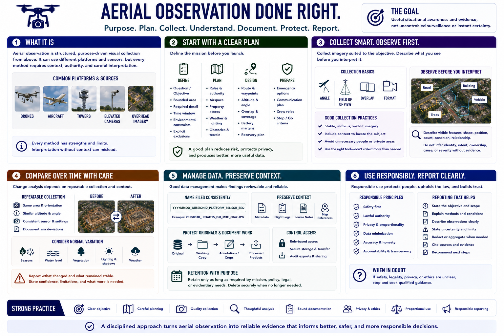

Course Summary and Key Takeaways
Connecting to LMS... Progress: in progress

Narration
Aerial observation is structured, purpose-driven visual collection from above. It can use drones, aircraft, towers, elevated cameras, or overhead imagery, but every method requires context, authority, and careful interpretation.
Begin with a question, bounded area, required detail, time window, environmental constraints, and explicit exclusions. Plan rules, airspace, property access, weather, lighting, obstacles, route, battery margins, recovery, and emergency options.
Collect stable, well-framed imagery with an angle, field of view, overlap, and format suited to the objective. Describe visible features before interpreting them, and never infer identity, intent, ownership, cause, or severity without supporting evidence.
Time-based comparison depends on repeatable collection and preserved date, location, sensor, and condition context. File naming, metadata, logs, source notes, controlled originals, access restrictions, and retention make findings reviewable.
The goal is useful situational awareness and evidence, not uncontrolled surveillance or instant certainty. Strong practice combines safety, image quality, documentation, privacy, proportionality, and responsible reporting.